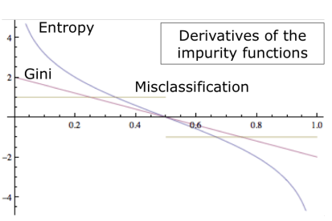

Pattern finding and evaluation
We want to design an algorithm that finds and evaluate patterns in our data in order to better divide our data when we're building the decision tree. There are several methods:
Methods comparison
 The Misclassification error behaviour is linear, therefore an error in the frequency is transfered into the impurity computation. The derivate of the Gini and Entropy function are more robust and limit the propagation of the error on frequenciesis